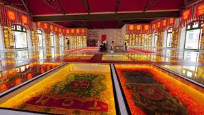

Paço do Frevo
O Paço do Frevo é um espaço cultural dedicado à preservação e promoção do frevo, um dos ritmos mais característicos do Carnaval de Pernambuco. Localizado no Recife Antigo, o museu celebra a história, a dança e a música que fazem parte do patrimônio cultural imaterial do Brasil.

Centro Cultural Judaico
O Centro Cultural Judaico é outro marco importante no Recife Antigo, localizado na antiga Sinagoga Kahal Zur Israel. Considerada a primeira sinagoga das Américas, o centro oferece exposições sobre a história da comunidade judaica no Recife e sua importância cultural e histórica para a cidade.